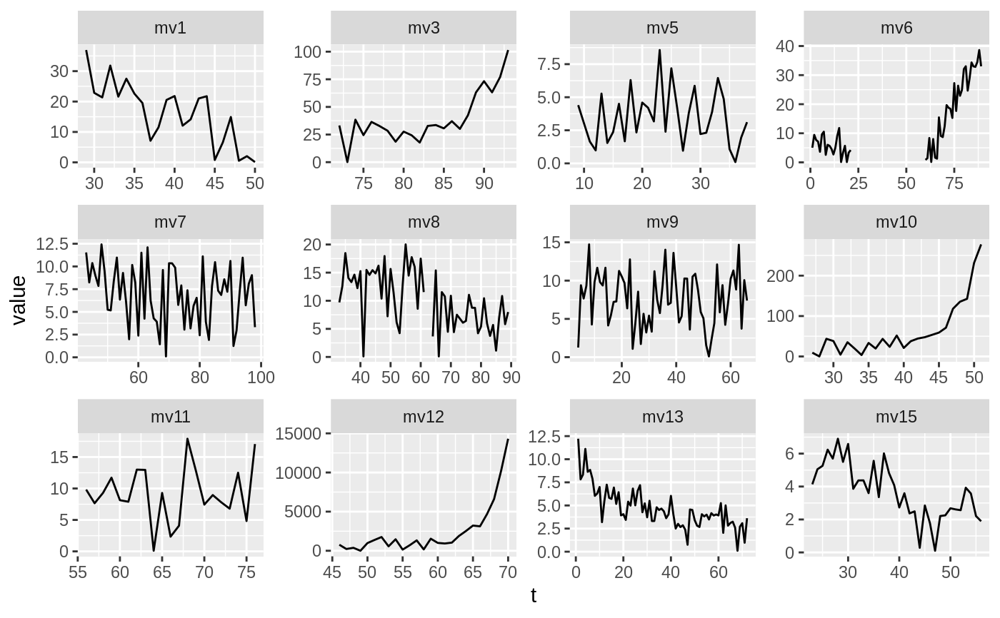
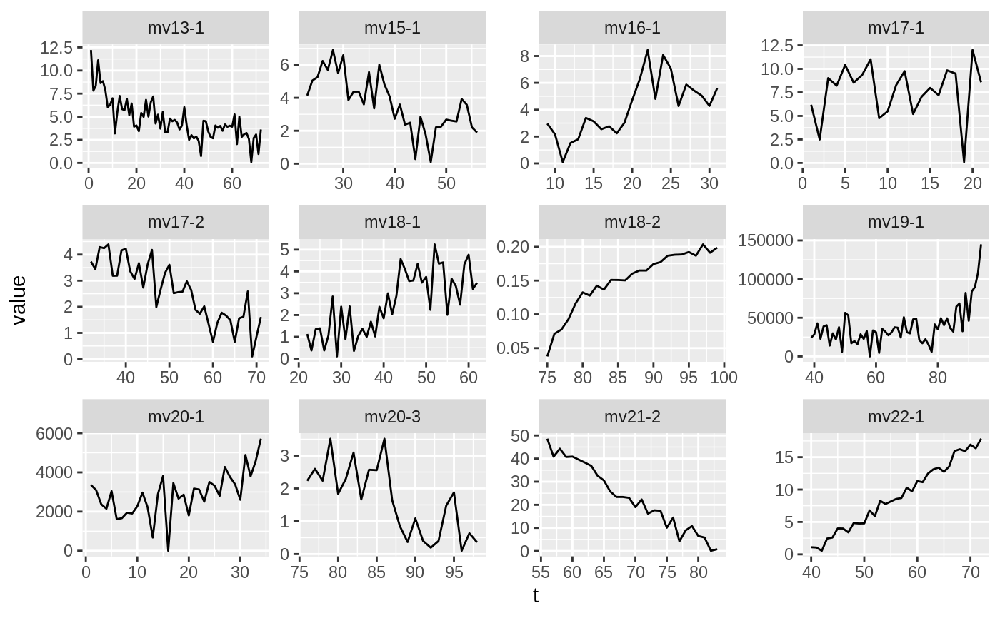

A tbl_mbte is passed. It is assumed, that the table is ordered
(panels to draw first are at the top of the table). The contents of the
panels (subplots) to draw are determined by the grouping specified in the
ellipsis (...). Since the number of panels to draw may not fit onto
one plot (can only contain nrow * ncol elements), panels are split
onto mulitple "pages". This is done by returning a list, where each element
is a ggplot2-chart, showing a subset of the data to plot.
mbte_panel_plot(x, expr, ..., nrow = 3, ncol = 4)
| x | A |
|---|---|
| expr | An expression to generate one panel of the plot (gets quoted) |
| ... | Variables used for grouping (get quoted). |
| nrow | Number of rows per page. |
| ncol | Number of columns per page. |
A list of ggplot-objects.
The user should pass a quosure as expr,
which specifies what should be drawn in a panel/subplot. It can make use of
the following masked objects:
Unnested signals (see mbte_unnest_signals)
Unnested fits (see mbte_unnest_fits)
Time variable as a symbol
Value-variable as a symbol
The total number of pages, that will be printed
The number of the current page (when evaluating
expr)
.u_signals and .u_fits are only available if the `signal`
and `fits`-columns are present.
filtered_signals (dataset used in examples),
facet_wrap
#> # A tibble: 37 x 3 #> mv signal_nr signal #> <chr> <int> <list> #> 1 mv1 1 <tibble [22 × 2]> #> 2 mv3 2 <tibble [22 × 2]> #> 3 mv5 1 <tibble [30 × 2]> #> 4 mv6 1 <tibble [21 × 2]> #> 5 mv6 3 <tibble [30 × 2]> #> 6 mv7 1 <tibble [56 × 2]> #> 7 mv8 1 <tibble [29 × 2]> #> 8 mv8 2 <tibble [26 × 2]> #> 9 mv9 1 <tibble [63 × 2]> #> 10 mv10 1 <tibble [25 × 2]> #> # … with 27 more rows# Draw a graph grouped by the measurement variable (multiple subsignals will # be displayed in one panel/subplot). plots <- mbte_panel_plot( x = filtered_signals, expr = { # expression for the content a subplot/panel # NOTE: `.u_signals` is provided by masking ggplot(.u_signals, aes(t, value)) + geom_path(aes(group = signal_nr)) }, mv # grouping varibales ) # only show 2 "pages" head(plots, n = 2)#> [[1]]#> #> [[2]]#># Now grouping by measurement variable (measured parameter) and signal_nr is # performed. plots <- mbte_panel_plot( x = filtered_signals, expr = { # NOTE: Using a grouping aesthetic is not necessary, since only one line # per panel will be drawn (because a signal in the used dataset is # identified by the `mv` and the `signal_nr` column). ggplot(.u_signals, aes(t, value)) + geom_path() }, mv, signal_nr # grouping variables ) # only display 2 elements of returned list head(plots, n = 2)#> [[1]]#> #> [[2]]#>